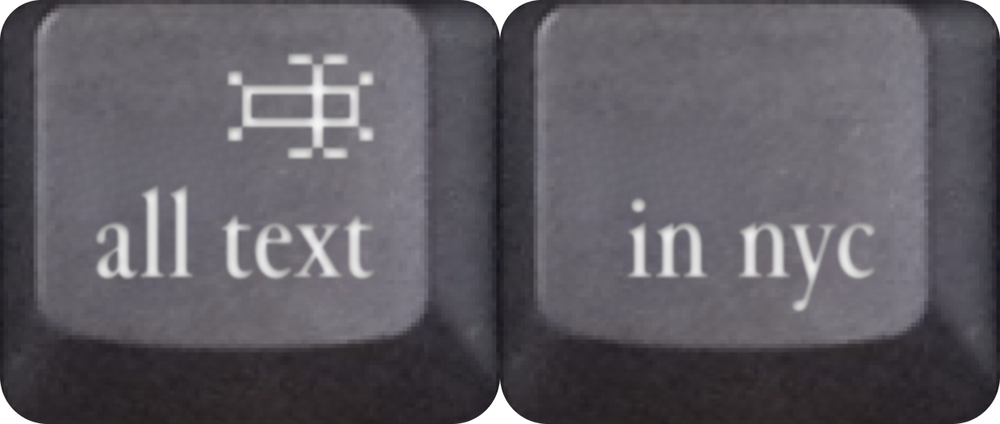

all text in nyc
Searchable text from New York City Street View imagery

all text in nyc is a search engine by Yufeng Zhao that finds text in Google Street View images across New York City. Optical character recognition turns shop signs, graffiti, advertisements, protest signs, warnings, and all language in the city into searchable material!
Questions to ask
- Which words are distributed evenly across the city, and which belong to only one block?
- Can you find your neighborhood without searching a street name?
- What stories might this data tell?